Computational Epidemiology · Lecture 4
Mass action
Every infected person can infect every susceptible person.
Today, part 1: what happens when contacts are local?
Known parameters
We picked \(\beta\), \(\gamma\) and \(R_0\).
Today, part 2: how do we get them from data, and how far can we trust them?
After the lecture: Pitch 3, first result. One figure per team.
Each cell is one individual: susceptible, infected or recovered. In every time step:
This is an individual-based model: no compartments and no ODEs, just rules for each individual.
For comparison, the well-mixed version: the same \(p\), \(q\) and 4 contacts, but the contacts are drawn from the whole population.
How long does a cell stay infected? It recovers with probability \(q\) per step, so the number of infectious steps is geometric, with mean \(1/q\).
Well mixed: per step, one infected cell infects about \(4p\) others (small \(p\)). Over \(1/q\) steps:
\[ R_0 \approx \frac{4p}{q} \qquad\Rightarrow\qquad \text{threshold at } p = q/4 \]
On the grid: what matters is the chance \(T\) that a given neighbour is ever infected. The neighbour escapes each step with probability \(1-p\), and the cell transmits for \(n\) steps with \(P(n) = q(1-q)^{n-1}\):
\[ T = 1 - \sum_{n \ge 1} q(1-q)^{n-1}(1-p)^n = 1 - \frac{q(1-p)}{1 - (1-q)(1-p)} \]
We need \(T\) for the threshold in a few slides.
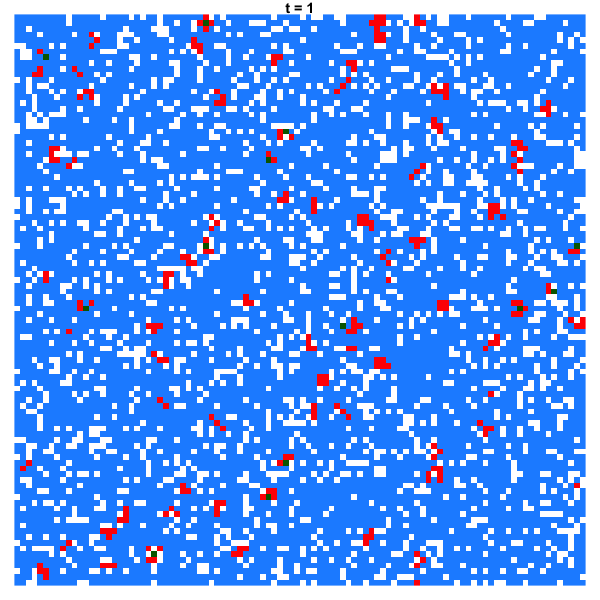
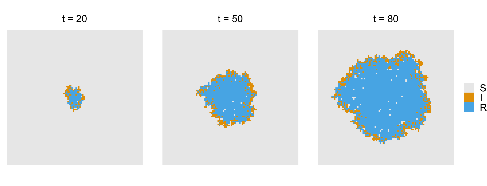
Infections can only happen at the front. Behind it, everyone has already recovered.
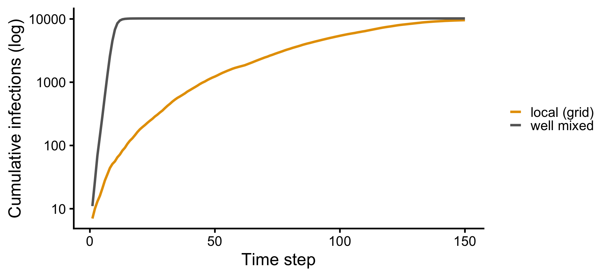
Well mixed: \(e^{rt}\). Local: the front moves at constant speed \(c\), so cases grow like \(\pi c^2 t^2\).
In continuous space, with local growth rate \(r\) and diffusion \(D\) (the Fisher–KPP equation):
\[ \frac{\partial I}{\partial t} = r I + D \nabla^2 I \quad\Rightarrow\quad c = 2\sqrt{rD} \]
At the leading edge almost everyone is susceptible, so the equation is linear:
\[ \frac{\partial I}{\partial t} = r I + D \frac{\partial^2 I}{\partial x^2} \]
Starting from a point source, the solution is spreading (diffusion) times growth:
\[ I(x, t) = \frac{I_0}{\sqrt{4\pi D t}}\; \exp\!\left(r t - \frac{x^2}{4 D t}\right) \]
The front is where \(I\) is still of order one, i.e. where the exponent is about zero:
\[ r t = \frac{x^2}{4 D t} \quad\Rightarrow\quad x = 2\sqrt{rD}\; t \]
So the front moves at constant speed \(c = 2\sqrt{rD}\). The infected area is a disc of radius \(ct\), so cumulative cases grow like \(\pi c^2 t^2\).
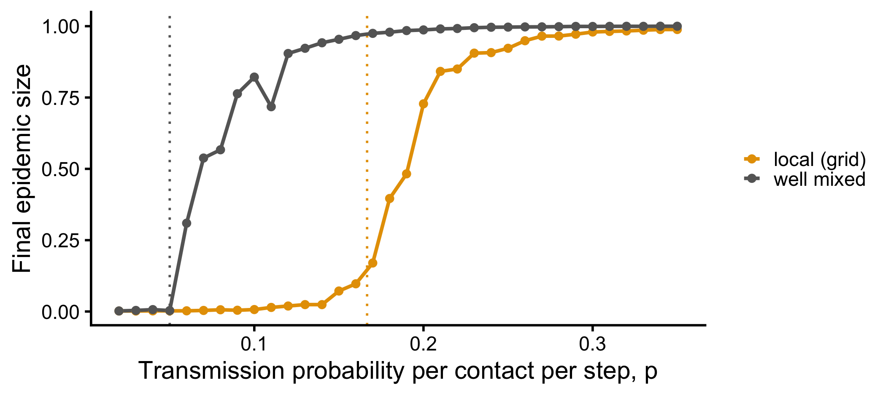
Dotted lines: well mixed, \(R_0 = 4p/q = 1\) at \(p = q/4\). Grid: bond percolation, where each neighbour is infected with probability ½, at \(p \approx q/(1+q)\).
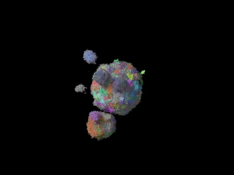
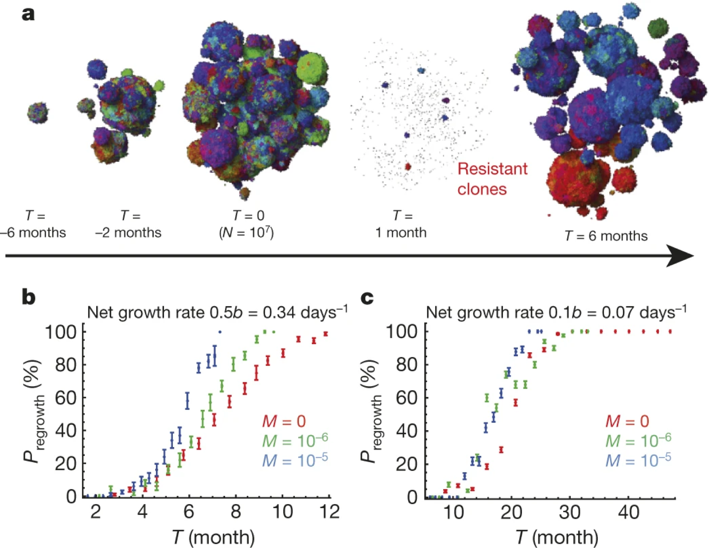
Waclaw et al. (2015): a 3D model of a growing tumour, with cells dividing into free space and occasionally migrating. Resistant clones are already present before treatment (a). The probability and timing of regrowth depend on the migration rate \(M\) (b, c).
Within a host, drug concentrations are not uniform: tissues, abscesses, biofilms, tumours.
Two habitats: an untreated refuge and a treated habitat, connected by migration \(m\).
| Migration from refuge into treated habitat | Effect on rescue |
|---|---|
| brings sensitive cells in, so more mutants arise there | helps (demographic supply) |
| sends mutants back to the refuge, where they are at a disadvantage | hurts (loss of adapted lineages) |
So rescue is most likely at intermediate migration, and only if the environment deteriorates slowly enough (Tomasini & Peischl 2018, 2020; Kirkpatrick & Peischl 2013).
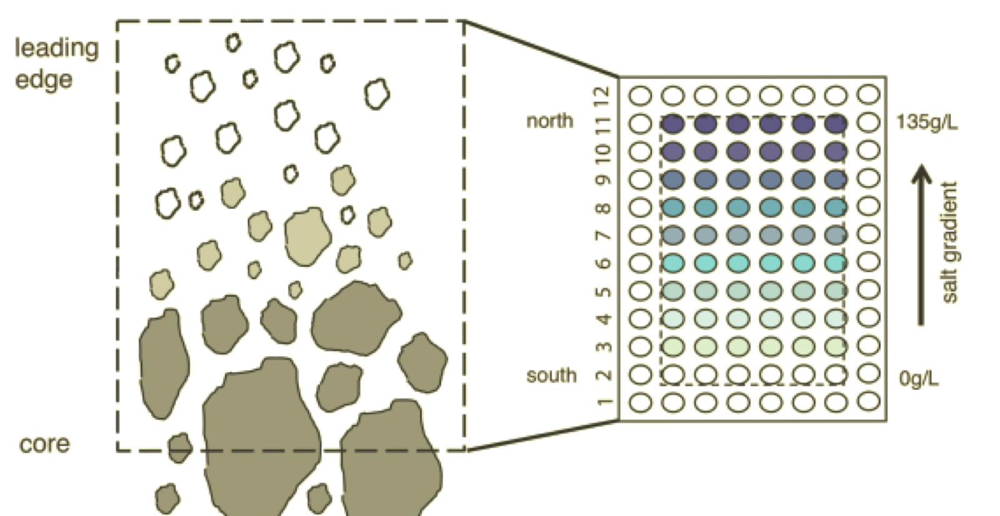
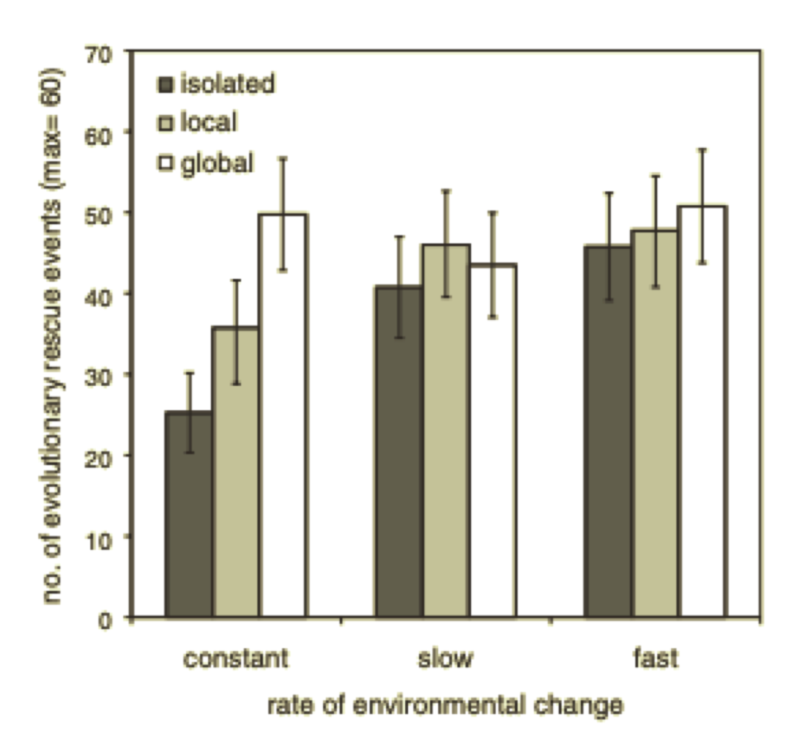
Yeast metapopulations on 96-well plates, with salt increasing from “south” to “north” (left). Populations were isolated or connected by local or global dispersal, and the environment deteriorated at different rates. Dispersal increased the number of rescued populations, most clearly in the “constant” treatment (right; Bell & Gonzalez 2011).
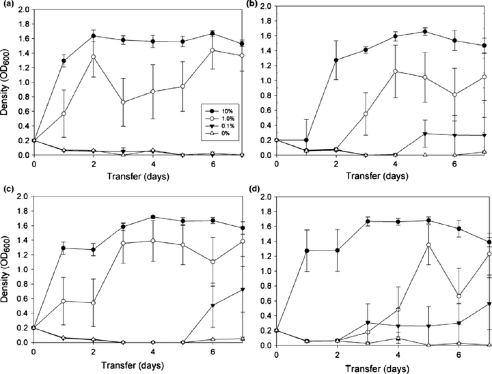
Pseudomonas aeruginosa in an antibiotic “sink”, receiving immigrants from an untreated source at rates from 0% to 10% (symbols); the panels differ in how the antibiotic concentration increased. Higher immigration and a slow increase in antibiotic concentration gave faster resistance evolution (Perron et al. 2008).
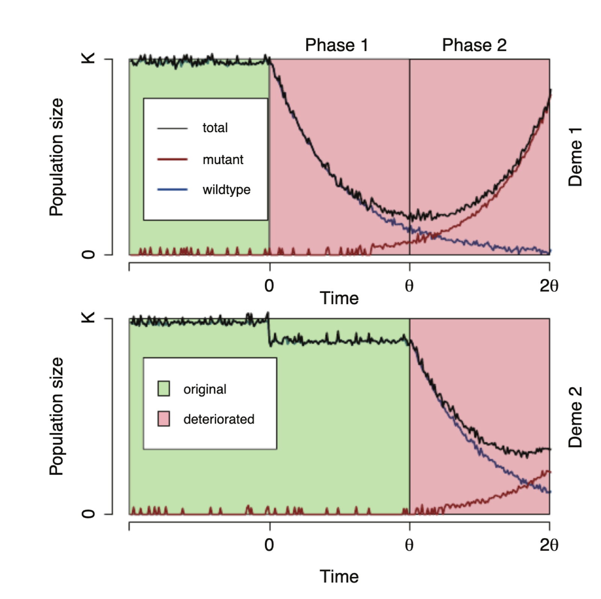
Deme 1 deteriorates at time 0 and deme 2 at time \(\theta\), connected by migration. A rescue mutation is beneficial in the deteriorated habitat and harmful in the original one. Its fate is a two-type branching process (Tomasini & Peischl 2018).
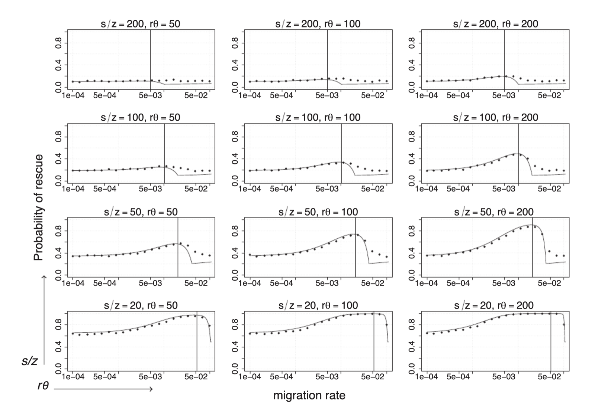
Rescue probability against migration rate (points: simulations; lines: branching-process theory). When the environment deteriorates slowly across habitats, the curve has a maximum: some gene flow helps, too much swamps the mutants.
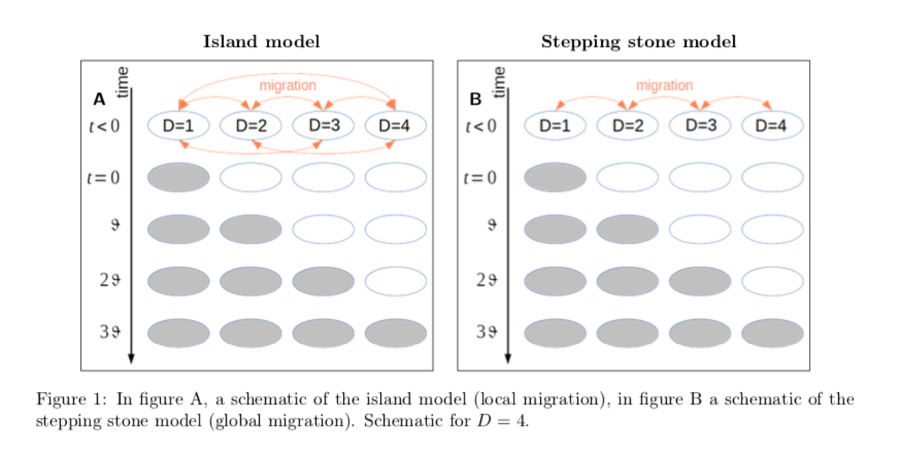
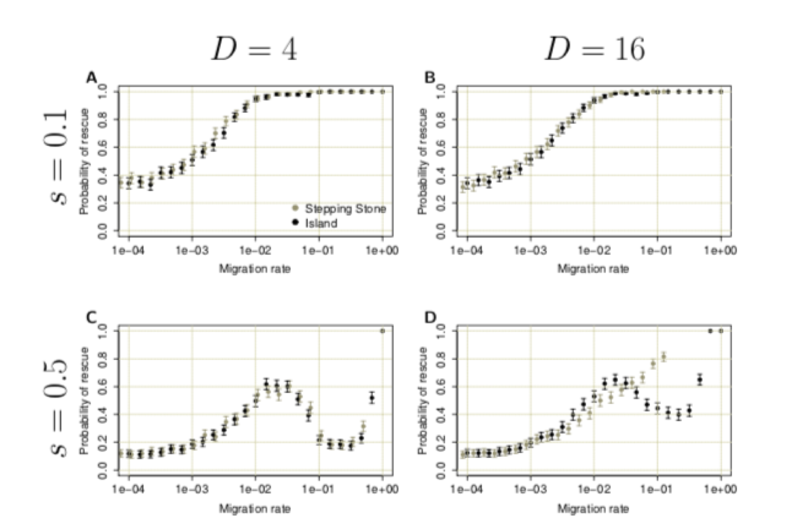
Island vs. stepping-stone migration between \(D\) demes (Tomasini & Peischl, preprint, doi 10.1101/2020.10.29.360842).
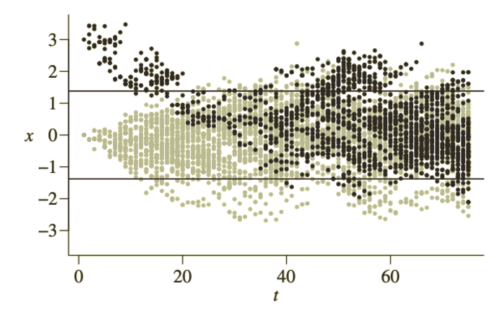
Continuous space: an individual-based simulation with a moving environmental boundary (Kirkpatrick & Peischl 2013). Migration has to be fine-tuned to the speed of environmental change.
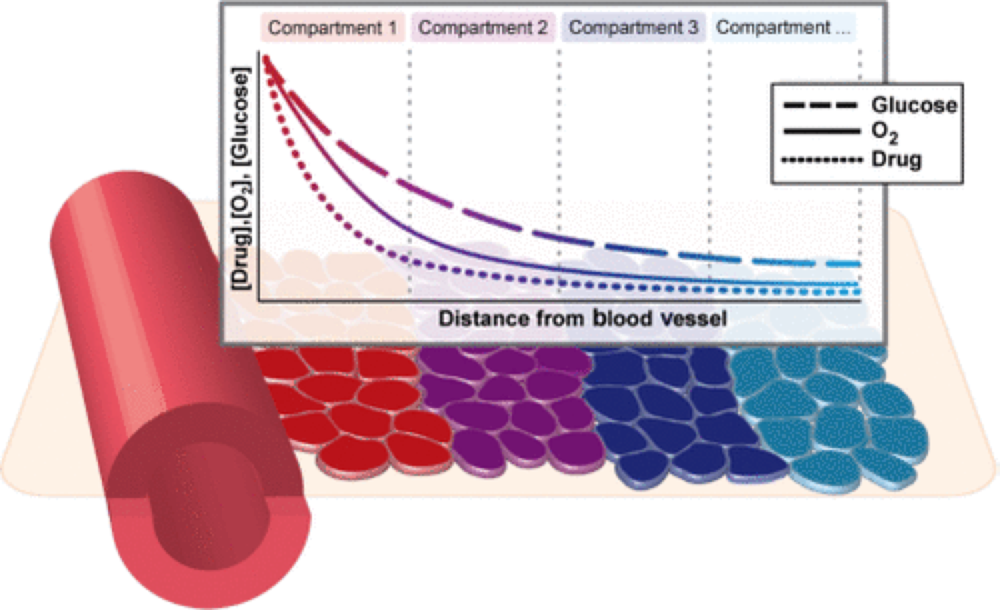
Drug, oxygen and glucose fall off with distance from a blood vessel, so cells in different compartments experience different selection (doi 10.4137/CIN.S19338). Every tumour is a structured population with built-in refuges.
Not \(\beta\) and \(\gamma\), but case counts: noisy, delayed, and incomplete.
The question during an outbreak: is it growing or shrinking right now? That is, is \(R_t > 1\)?
The naive estimate, \(R_t \approx I_t / I_{t-\tau}\), raises three problems:
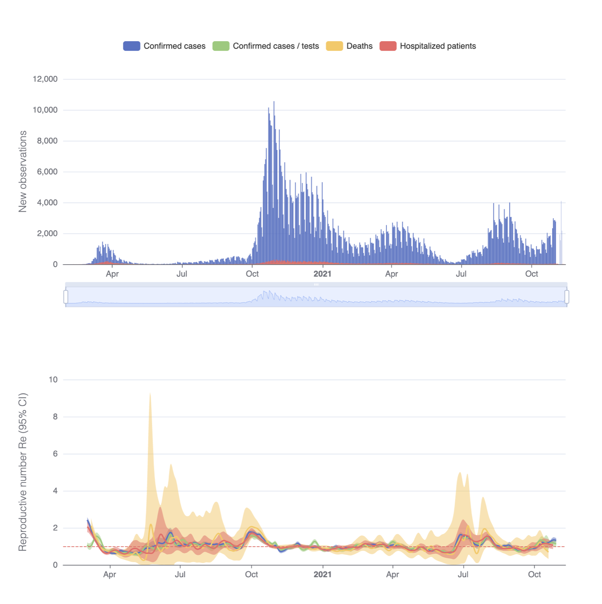
The ETH Zürich group (Tanja Stadler, member of the Swiss COVID-19 Science Task Force) estimated \(R_t\) daily from cases, hospitalisations and deaths separately (Huisman et al. 2022). Top: data. Bottom: \(R_t\) for each data source.
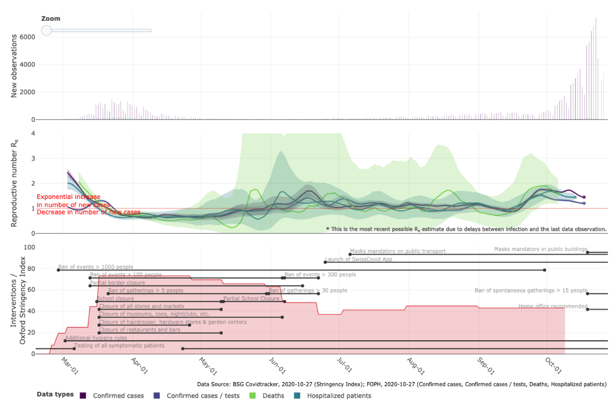
\(R_t\) fell below 1 in spring 2020 as measures came in.
Infections today are caused by infections over the past days, weighted by the serial interval \(w_s\):
\[ E[I_t] = R_t \,\Lambda_t, \qquad \Lambda_t = \sum_{s \ge 1} I_{t-s}\, w_s \]
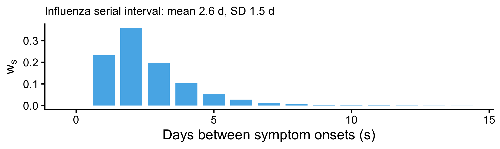
\(\Lambda_t\) is the total infectiousness currently out there.
Someone infected \(s\) days ago is still infectious, to a degree that depends on \(s\). Let \(w_s\) be the fraction of their total onward transmission that happens on day \(s\) (with \(\sum_s w_s = 1\)).
If each case causes \(R_t\) new cases in total, the cases from day \(t - s\) contribute
\[ I_{t-s} \cdot R_t \cdot w_s \]
new cases today.
Sum over all past days:
\[ E[I_t] = R_t \sum_{s \ge 1} I_{t-s}\, w_s = R_t\, \Lambda_t \]
In practice \(w_s\) is approximated by the serial interval: the time between symptom onsets of infector and infectee, which we can observe.
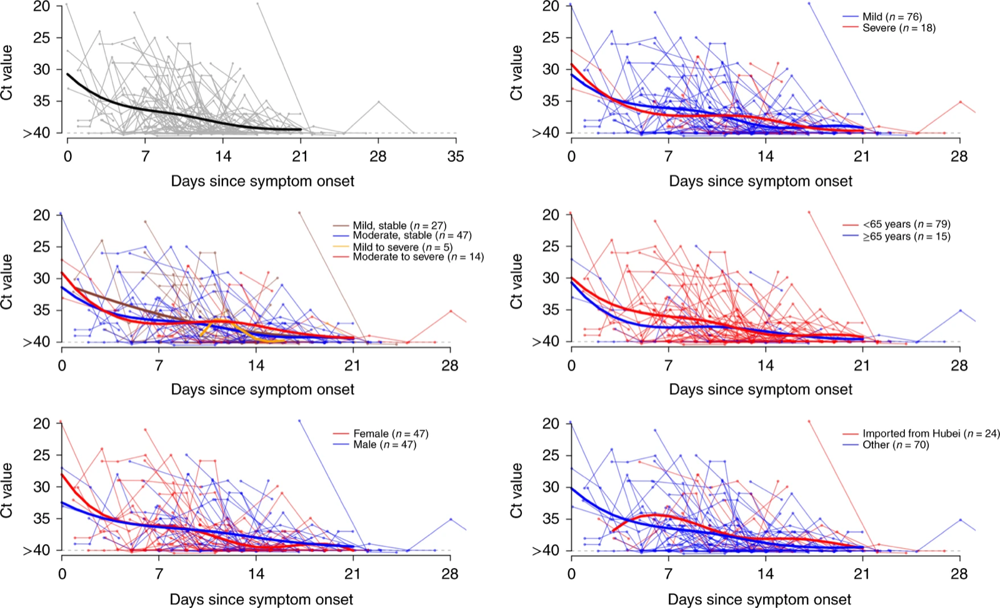
He et al. (2020) measured SARS-CoV-2 viral load in throat swabs of 94 patients, as Ct values: lower Ct means more virus.
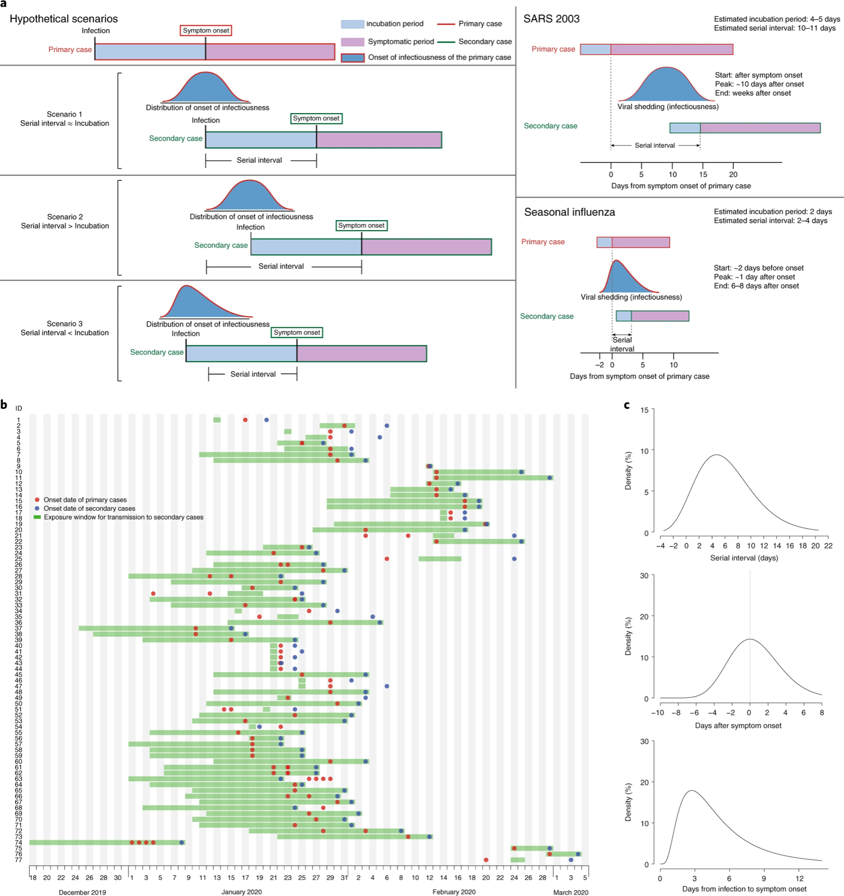
He et al. (2020) combined 77 infector–infectee pairs with the incubation period to infer when infectors transmit. They estimated that about 44% of transmission happened before symptom onset. This is the \(w_s\) that goes into the renewal equation.
Assume \(I_t \sim \text{Poisson}(R\,\Lambda_t)\), with \(R\) constant over a window of \(\tau\) days and a gamma prior with shape \(a\) and scale \(b\).
The posterior is again a gamma distribution, with mean
\[ \hat R_t = \frac{a + \sum_{s = t-\tau+1}^{t} I_s}{1/b + \sum_{s = t-\tau+1}^{t} \Lambda_s} \;\approx\; \frac{\text{cases in the window}}{\text{infectiousness in the window}} \]
That is the whole method behind EpiEstim::estimate_R(). Everything else is choosing \(w_s\) and \(\tau\).
Likelihood: each day in the window is Poisson with mean \(R\Lambda_s\):
\[ L(R) = \prod_{s} \frac{(R\Lambda_s)^{I_s}\, e^{-R\Lambda_s}}{I_s!} \;\propto\; R^{\sum I_s}\; e^{-R \sum \Lambda_s} \]
Prior: gamma with shape \(a\) and scale \(b\): \(\;\pi(R) \propto R^{a-1} e^{-R/b}\).
Posterior \(\propto\) likelihood \(\times\) prior:
\[ p(R \mid \text{data}) \;\propto\; R^{\,a + \sum I_s - 1}\; e^{-R\,(1/b + \sum \Lambda_s)} \]
This is again a gamma distribution, with shape \(a + \sum I_s\) and rate \(1/b + \sum\Lambda_s\). Its mean is the formula on the previous slide.
Bonus: if only a constant fraction \(\rho\) of cases is reported, every \(I_s\) and every \(\Lambda_s\) is multiplied by \(\rho\), and \(\rho\) cancels in \(\sum I_s / \sum \Lambda_s\).
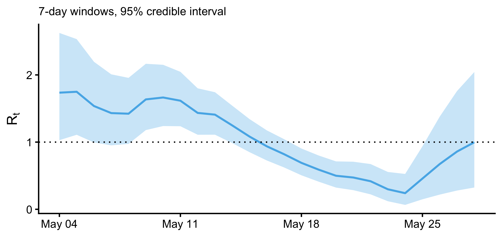
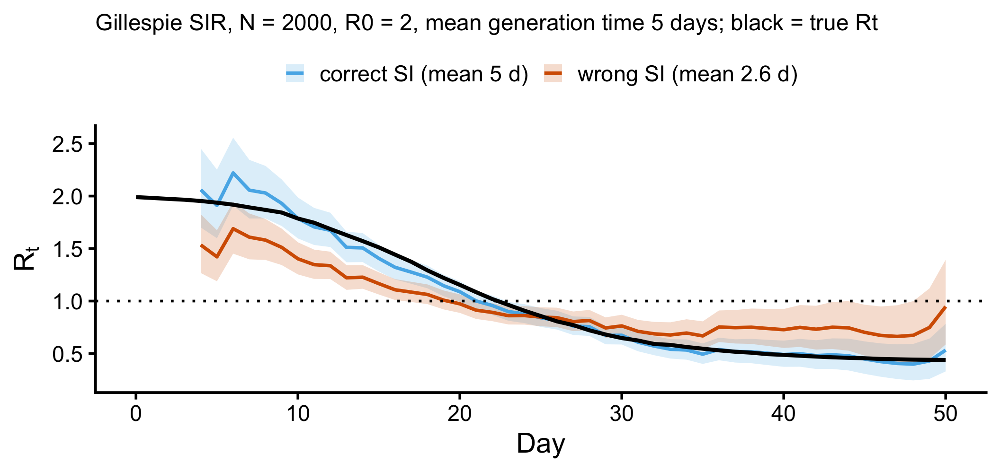
The data really tell us the growth rate \(r\). Turning \(r\) into \(R\) needs the generation interval (Wallinga & Lipsitch 2007). For an exponential interval with mean \(T_g\):
\[ R = 1 + r\,T_g \]
During exponential growth, \(I_t = I_0 e^{rt}\). Put this into the renewal equation (continuous time, generation interval density \(g\)):
\[ I_0 e^{rt} = R \int_0^\infty I_0 e^{r(t - \tau)}\, g(\tau)\, d\tau \quad\Rightarrow\quad 1 = R \int_0^\infty e^{-r\tau} g(\tau)\, d\tau \]
For an exponential generation interval, \(g(\tau) = e^{-\tau/T_g}/T_g\):
\[ \int_0^\infty e^{-r\tau}\, \frac{e^{-\tau/T_g}}{T_g}\, d\tau = \frac{1}{1 + rT_g} \quad\Rightarrow\quad R = 1 + r\,T_g \]
Example: cases double every 5 days, so \(r = \ln 2/5 \approx 0.14\)/day. With \(T_g = 5\) days, \(R \approx 1.7\); with \(T_g = 2.6\) days, \(R \approx 1.4\). Same data, different \(R\).
| Issue | Effect on \(\hat R_t\) |
|---|---|
| Window length \(\tau\) | short: noisy; long: smooth but late |
| Constant under-reporting (only a fraction \(\rho\) of cases seen) | cancels: \(\rho\) appears in numerator and denominator |
| Changing reporting (more testing) | looks like growth: \(\hat R_t\) biased upwards |
| Reporting delays | the most recent days are incomplete, so \(\hat R_t\) looks like it is falling |
| Imported cases | counted as local transmission: \(\hat R_t\) too high |
Rule of thumb: test your method on simulated data where you know the truth before trusting it on real data.
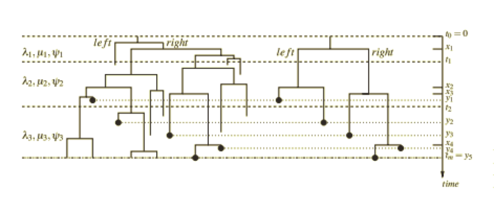
Birth–death skyline: transmission (\(\lambda\)), becoming non-infectious (\(\mu\)) and sampling (\(\psi\)) rates change between time intervals. Fitting this to a sampled phylogeny gives \(R_e = \lambda/\mu\) through time (Stadler et al. 2013).
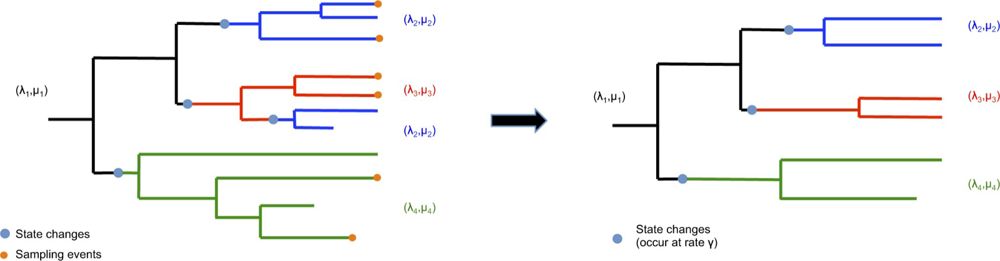
Multi-type: lineages can switch between types (e.g. locations or risk groups), each with its own rates (Barido-Sottani et al. 2020).
This is the branching process from Day 1, run backwards: from the tree to the rates.
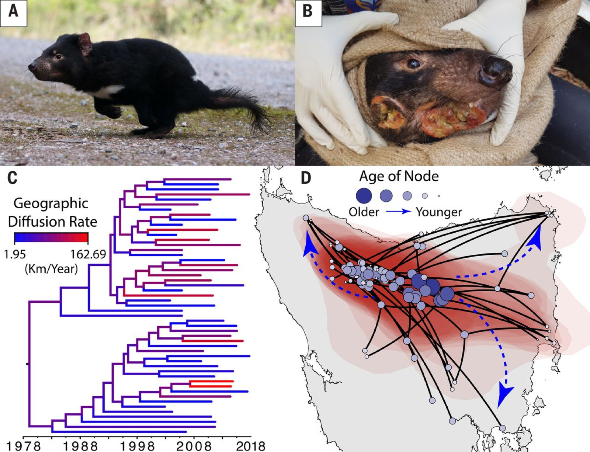
Devil facial tumour disease spreads by biting: the cancer cells themselves are the pathogen. Patton et al. (2020) built a phylogeny from tumour genomes (C) and traced its spread across Tasmania (D).
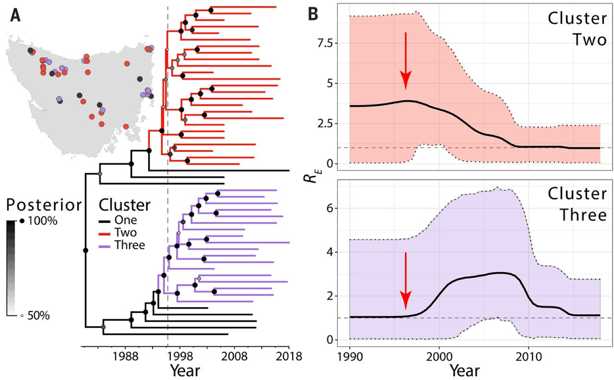
Birth–death phylodynamics on the tumour tree: in both clusters \(R_e\) was around 3–4 early on and has since dropped to about 1. This suggests the disease is becoming endemic rather than driving devils to extinction (Patton et al. 2020).
Haug et al. (2020) used \(R_t\) itself as data:
The hard part: many measures start at almost the same time, so their effects are entangled.
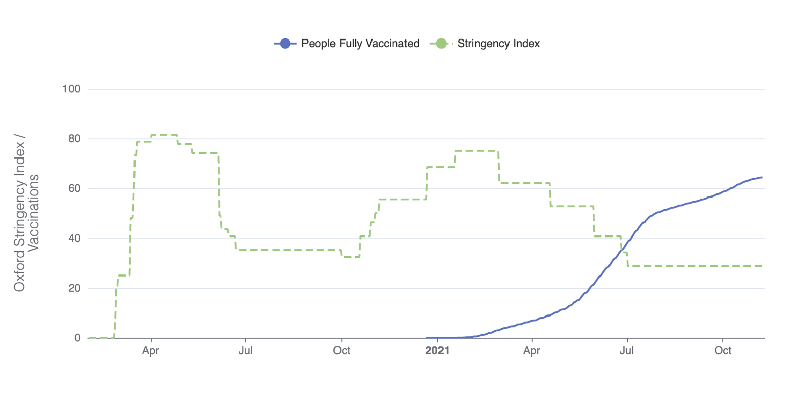
Example input: the Oxford Stringency Index and vaccination coverage over time.
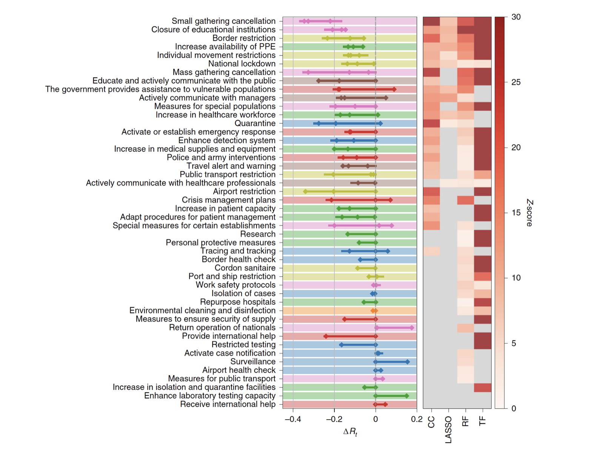
Tutorials: T5 (spatial), T6 (\(R_t\))
Project hooks from today: long-range jumps · ring vs. random vaccination on a grid · a tumour with resistant cells on a grid · \(R_t\) for an EpiEstim dataset (SARS2003, Measles1861, Smallpox1972, Flu1918, mers_2014_15) · simulated lockdown, and how late EpiEstim notices it